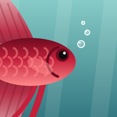

What’s New
Finside: Idle Aquarium
Right on time
Version 0.3.1 · October 27, 2026
- Your tank’s clock now always matches your phone’s, even after a long break, a daylight saving change or a trip across time zones. Nothing grows or ages any differently.
Lights and little helpers
Version 0.3.0 · October 25, 2026
- Tank lights come in six colors. Find them in the Shop under Lights. [Credit: Julie Kamperides]
- Turn the lights on at night from This tank. They stay on through the next day, then switch off by themselves. Leave them on all night and your fish get tired.
- Name tags: show names over your animals, or just the ones you named. It’s in Settings. [Credit: Julie Kamperides]
- Pick how lively the filter bubbles look, in Settings. [Credit: Julie Kamperides]
- Snails and shrimp eat more algae now, and the Water tab shows how much they’re helping.
- Tap an achievement to see how to earn it. The coins are your reward. [Credit: Julie Kamperides]
- Rock ledges have a spot in the middle, and they tell you when something won’t fit. [Credit: Julie Kamperides]
- Expand all and Collapse all are always at the top of the Shop.
- This card! The website has every release’s notes too.
Fixes from playtesting
Version 0.2.1 · October 24, 2026
- Notifications are much more reliable, especially on Android.
- Time away always counts, even when your phone pauses the game without closing it. [Credit: Niki Kamperides]
- A new heads-up when the water is dirty enough to make fish sick.
- Red dots only show for tanks that really need you, and the dots by the tank name show which tank you’re looking at.
- Little arrows on the menu tabs show when there are more to scroll to.
- Almond leaves and zucchini slices can be moved. Press and hold, then slide. [Credit: Niki Kamperides]
Twenty gallons
Version 0.2.0 · October 23, 2026
- A 20 gallon tank, with showpiece fish like the dwarf gourami, cockatoo dwarf cichlid and paradise fish.
- More fish: bristlenose pleco, Bolivian ram, cherry barb, rummynose tetra, pea puffer and honey gourami.
- New plants, including Monte Carlo and a CO2 system to grow them.
- Magnetic rock ledges, and plants that grow on wood and rock.
- Detailed new art for every animal, plus color varieties for bettas, shrimp and snails.
- Little icons show who’s hiding in a cave.
- Trim plants and sell the cuttings. Trimmed plants grow back bushier.
- Double-tap to zoom, a help button, and a tidier Tanks tab.
First splash
Version 0.1.0 · October 21, 2026
- Start with a 1 gallon tank and grow up to 10 gallons, with Jessie to show you the ropes.
- Real fishkeeping, simplified: cycle the tank, keep the water clean and feed your fish.
- Fish, shrimp and snails with moods, babies and rare colors.
- A treasure chest that fills with coins while you’re away, achievements, rooms and cats.
- Notifications when your tank needs you.